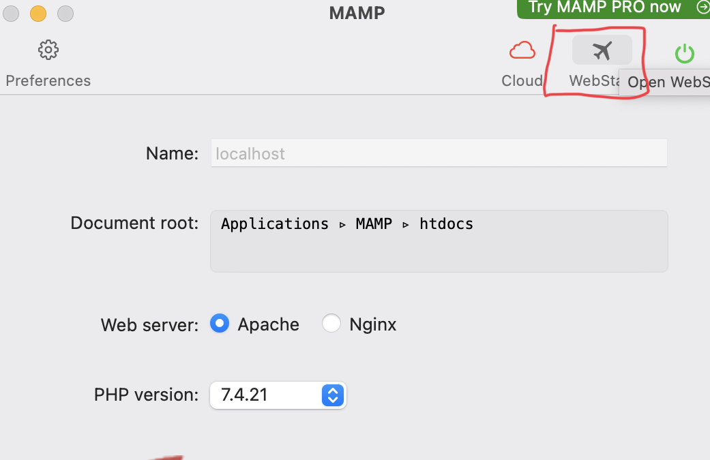
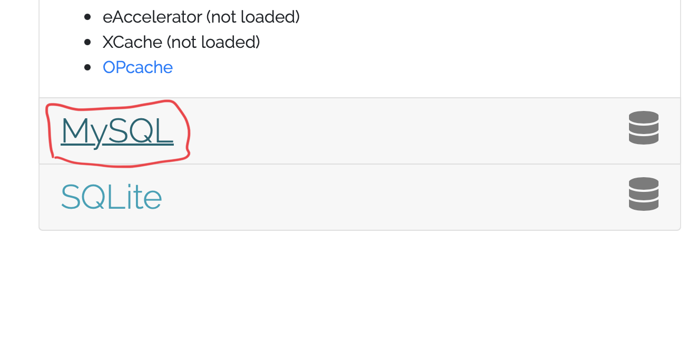
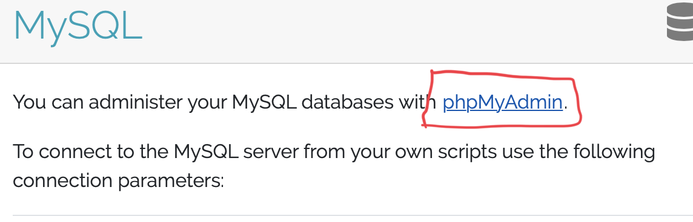
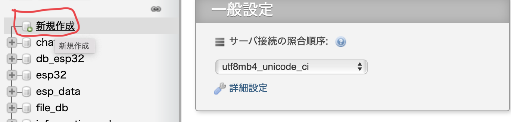
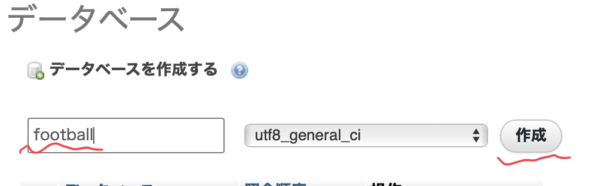
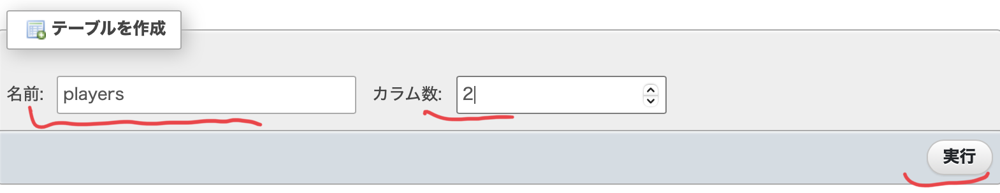
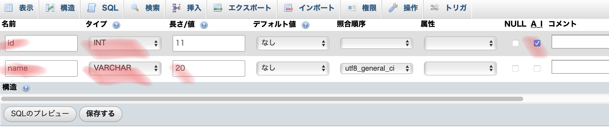
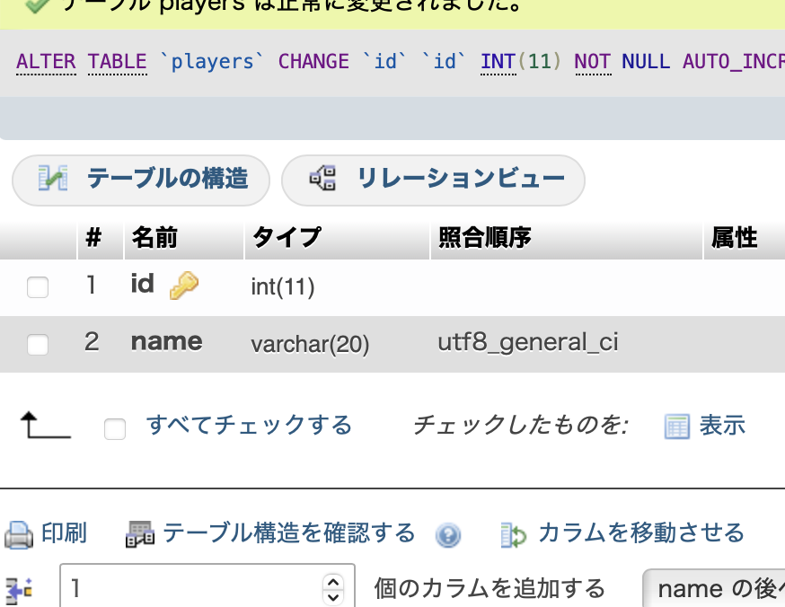

Hello!
・この記事によると、データベースとは決まった形式で
整理されたデータの集まりのことだと言われている。
・一方でテーブルとは、この記事でデータベースの種類
ごとの単位のことだと定義されている。
・まずMAMPを開いて、四角の部分を選択。

・そしたらサイトに移動するので四角をクリック。

・最後にphpMyAdminをクリックして開くことができる。

・まずMAMPを開いて、四角の部分を選択。

・名前を入力、今回はfootballと入力して作成を選択。

・名前を入力、今回はplayersと入力して実行を選択。

・テーブルの要素を入力する。
・ここも個々のニーズに合わせて内容を変えるが今回はこの内容。
・最後に保存を押して完成。


今回はphpMyAdminを使っての作成でしたが、
ターミナルを使った作成方法は こちら で載せています。
Fin.